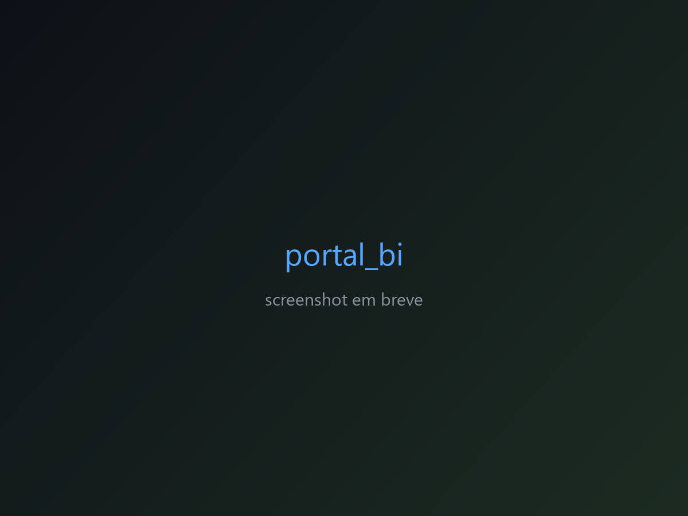

Projetos
Em destaque

📦 pipeline_dados_v2
Pipeline modular de e-commerce (Olist) com Airflow, dbt e Databricks — Bronze → Silver → Gold, consumido em Power BI.
Ver case study →
📦 dash_olist
Dashboard de operações da Olist com 5 páginas, Google Apps Script Web App consultando Databricks.
Ver case study →
📦 portal_bi
Portal corporativo para centralizar dashboards e ferramentas internas, como Databricks App.
Ver case study →
📦 analises_olist
Análise exploratória do dataset Olist com pandas, com saída para dashboard em Power BI.
Ver case study →